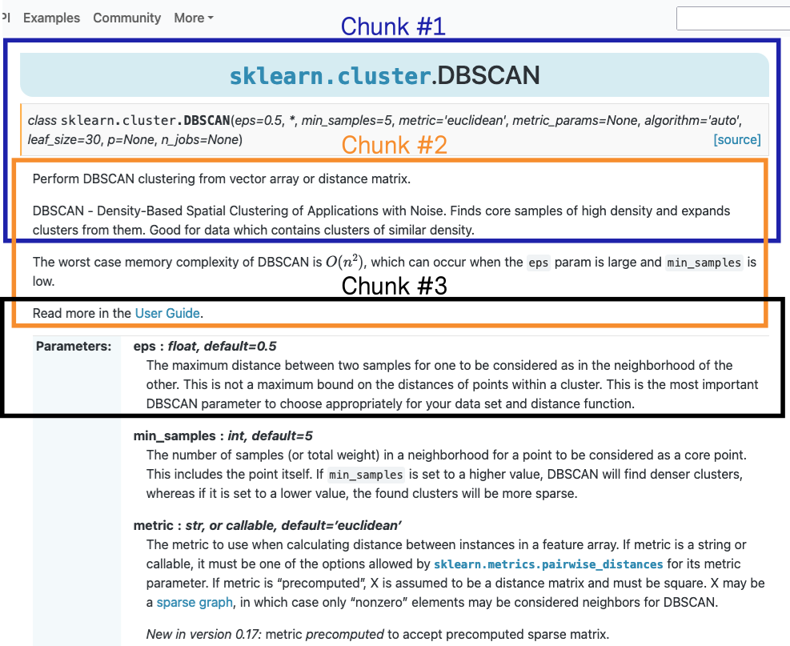

Text Scraping#
In a Retrieval Augmented Generation (RAG) framework, the “document” retrieved and provided to the Large Language Model (LLM) to generate an answer corresponds to chunks extracted from the documentation.
The first important aspect is to be aware that the context of the LLM is limited. Therefore, we need to provide chunks of documentation that are relatively limited and focused to not reach the context limit.
The most common strategy is to extract chunks of text with a given number of tokens and an overlap between chunks.
{kind=link}
The various tutorials to build RAG models use this strategy. While it is a fast way to get started, it is not the best strategy to get the most out of the scikit-learn documentation. In the subsequent sections, we present different strategies specifically designed for certain portions of the scikit-learn documentation.
API documentation scraper#
We refer to “API documentation” as the following documentation entry point: https://scikit-learn.org/stable/modules/classes.html.
It corresponds to the documentation of each class and function implemented in
scikit-learn. This documentation is automatically generated from the docstrings of the
classes and functions. These docstrings follow the numpydoc formatting. As an example,
we show a generated HTML page containing the documentation of a scikit-learn estimator:

Before diving into the chunking mechanism, it is interesting to think about the type of queries that such documentation can help answer. Indeed, these documentation pages are intended to provide information about class or function parameters, short usage snippets of code, and related classes or functions. The narration on these pages is relatively short, and further discussions are generally provided in the user guide instead. So we would expect that the chunks of documentation to be useful to answer questions such as:
What are the parameters of
LogisticRegression?What are the values of the
strategyparameter in a dummy classifier?
Now that we have better framed our expectations, we can think about the chunks extraction. We could go forward with the naive approach described above. However, it will fall short to help the LLM answer the questions. Let’s go into an example to illustrate this point.
Consider the second question above: “What are the values of the strategy parameter in
a dummy classifier?” While our retrievers (refer to the section
Retriever of the documentation) are able to get the association
between the DummyClassifier and the strategy parameter, the LLM
will not be able to get this link if the chunk retrieved does not contain this
relationship. Indeed, the naive approach will provide a chunk where strategy could be
mentioned, but it might not belong to the DummyClassifier class.
For instance, we could retrieve the following three chunks that are relatively relevant to the query:
Chunk #1:
strategy : {"most_frequent", "prior", "stratified", "uniform", \
"constant"}, default="prior"
Strategy to use to generate predictions.
* "most_frequent": the `predict` method always returns the most
frequent class label in the observed `y` argument passed to `fit`.
The `predict_proba` method returns the matching one-hot encoded
vector.
* "prior": the `predict` method always returns the most frequent
class label in the observed `y` argument passed to `fit` (like
"most_frequent"). ``predict_proba`` always returns the empirical
class distribution of `y` also known as the empirical class prior
distribution.
* "stratified": the `predict_proba` method randomly samples one-hot
vectors from a multinomial distribution parametrized by the empirical
class prior probabilities.
The `predict` method returns the class label which got probability
one in the one-hot vector of `predict_proba`.
Each sampled row of both methods is therefore independent and
identically distributed.
* "uniform": generates predictions uniformly at random from the list
of unique classes observed in `y`, i.e. each class has equal
probability.
* "constant": always predicts a constant label that is provided by
the user. This is useful for metrics that evaluate a non-majority
class.
Chunk #2:
strategy : {"mean", "median", "quantile", "constant"}, default="mean"
Strategy to use to generate predictions.
* "mean": always predicts the mean of the training set
* "median": always predicts the median of the training set
* "quantile": always predicts a specified quantile of the training set,
provided with the quantile parameter.
* "constant": always predicts a constant value that is provided by
the user.
Chunk #3:
strategy : str, default='mean'
The imputation strategy.
- If "mean", then replace missing values using the mean along
each column. Can only be used with numeric data.
- If "median", then replace missing values using the median along
each column. Can only be used with numeric data.
- If "most_frequent", then replace missing using the most frequent
value along each column. Can be used with strings or numeric data.
If there is more than one such value, only the smallest is returned.
- If "constant", then replace missing values with fill_value. Can be
used with strings or numeric data.
Therefore, the chunks are relevant to the strategy parameter, but they are related to
the DummyClassifier, DummyRegressor, and
SimpleImputer classes.
If we provide such information to a human who is not familiar with the scikit-learn API, they will not be able to determine which of the above chunks is relevant to answer the query. If they are experts, they might use their previous knowledge to select the relevant chunk.
So when it comes to an LLM, you should not expect more than a human: if the LLM has been trained on similar queries, then it might be able to use the relevant information, but otherwise, it will not be the case. For example, the Mistral 7b model would only summarize the information of the chunks and provide an unhelpful answer.
As a straightforward solution to the above problem, we could think that we should go beyond the naive chunking strategy. For instance, if our chunk contains the associated class or function to the parameter description, then it will allow us to disambiguate the information and thus help our LLM answer the relevant question.
As previously stated, scikit-learn uses the numpydoc formalism to document the classes
and functions. This library comes with a parser that structures the docstring
information, such that you know about the section, the parameters, the types, etc. We
implemented APINumPyDocExtractor that leverages this
information to build meaningful chunks of documentation. The chunk size in this case is
not controlled, but because of the nature of the documentation, we know that it will
never be too large.
For example, a chunk created that is going to be relevant to the previous query is the following:
source: https://scikit-learn.org/stable/modules/generated/sklearn.dummy.DummyClassifier.html
content: Parameter strategy of sklearn.dummy.DummyClassifier.
strategy is described as 'Strategy to use to generate predictions.
* "most_frequent": the `predict` method always returns the most
frequent class label in the observed `y` argument passed to `fit`.
The `predict_proba` method returns the matching one-hot encoded
vector.
* "prior": the `predict` method always returns the most frequent
class label in the observed `y` argument passed to `fit` (like
"most_frequent"). ``predict_proba`` always returns the empirical
class distribution of `y` also known as the empirical class prior
distribution.
* "stratified": the `predict_proba` method randomly samples one-hot
vectors from a multinomial distribution parametrized by the empirical
class prior probabilities.
The `predict` method returns the class label which got probability
one in the one-hot vector of `predict_proba`.
Each sampled row of both methods is therefore independent and
identically distributed.
* "uniform": generates predictions uniformly at random from the list
of unique classes observed in `y`, i.e. each class has equal
probability.
* "constant": always predicts a constant label that is provided by
the user. This is useful for metrics that evaluate a non-majority
class.
.. versionchanged:: 0.24
The default value of `strategy` has changed to "prior" in version
0.24.' and has the following type(s): {"most_frequent", "prior", "stratified",
"uniform", "constant"}, default="prior"
By providing chunks that maintain the relationship between the parameter and its corresponding class, we enable the Mistral 7b model to disambiguate the information and provide a relevant answer.
Chunk formatting leveraging numpydoc#
In this section, we provide detailed information regarding the formatting used to create
the chunks for classes and functions by leveraging the numpydoc formalism. You can
refer to the numpydoc documentation have more information
regarding this formalism.
We are creating individual chunks for the following sections:
class signature with default parameters
class short and extended summary
class parameters description
class attributes description
associated class or function in “See Also” section
class note section
class example usage
class references
For each of these sections, we create a chunk of text in natural language to summarize the information. A similar approach is used for functions and methods of a class. We provide an example of chunks extracted for the sklearn.feature_extraction.image.extract_patches_2d:
sklearn.feature_extraction.image.extract_patches_2d
The parameters of extract_patches_2d with their default values when known are:
image, patch_size, max_patches (default=None), random_state (default=None).
The description of the extract_patches_2d is as follow.
Reshape a 2D image into a collection of patches.
The resulting patches are allocated in a dedicated array.
Read more in the :ref:`User Guide <image_feature_extraction>`.
Parameter image of sklearn.feature_extraction.image.extract_patches_2d.
image is described as 'The original image data. For color images, the last dimension
specifies
the channel: a RGB image would have `n_channels=3`.' and has the following type(s):
ndarray of shape (image_height, image_width) or
(image_height, image_width, n_channels)
Parameter patch_size of sklearn.feature_extraction.image.extract_patches_2d.
patch_size is described as 'The dimensions of one patch.' and has the following
type(s): tuple of int (patch_height, patch_width)
Parameter max_patches of sklearn.feature_extraction.image.extract_patches_2d.
max_patches is described as 'The maximum number of patches to extract. If
`max_patches` is a float between 0 and 1, it is taken to be a proportion of the
total number of patches. If `max_patches` is None it corresponds to the total number
of patches that can be extracted.' and has the following type(s): int or float,
default=None
Parameter random_state of sklearn.feature_extraction.image.extract_patches_2d.
random_state is described as 'Determines the random number generator used for
random sampling when `max_patches` is not None. Use an int to make the randomness
deterministic.
See :term:`Glossary <random_state>`.' and has the following type(s): int,
RandomState instance, default=None
patches is returned by sklearn.feature_extraction.image.extract_patches_2d.
patches is described as 'The collection of patches extracted from the image, where
`n_patches` is either `max_patches` or the total number of patches that can be
extracted.' and has the following type(s): array of shape
(n_patches, patch_height, patch_width) or
(n_patches, patch_height, patch_width, n_channels)
sklearn.feature_extraction.image.extract_patches_2d
Here is a usage example of extract_patches_2d:
>>> from sklearn.datasets import load_sample_image
>>> from sklearn.feature_extraction import image
>>> # Use the array data from the first image in this dataset:
>>> one_image = load_sample_image("china.jpg")
>>> print('Image shape: {}'.format(one_image.shape))
Image shape: (427, 640, 3)
>>> patches = image.extract_patches_2d(one_image, (2, 2))
>>> print('Patches shape: {}'.format(patches.shape))
Patches shape: (272214, 2, 2, 3)
>>> # Here are just two of these patches:
>>> print(patches[1])
[[[174 201 231]
[174 201 231]]
[[173 200 230]
[173 200 230]]]
>>> print(patches[800])
[[[187 214 243]
[188 215 244]]
[[187 214 243]
[188 215 244]]]
User Guide documentation scraper#
We refer to “User Guide documentation” to the narrative documentation that is handwritten and provides a detailed explanation of the concepts of machine learning concept and how those translate into scikit-learn usage. The HTML generated pages are available at https://scikit-learn.org/stable/user_guide.html. Each page have the following look:

Here, we observed that the information is not structure as in the API documentation.
The naive approach of chunking is more appropriate.
UserGuideDocExtractor is a scraper that chunks the
documentation in this manner. It relies on beautifulsoup4 to parse the HTML content
and recursively chunk the content.
It provides two main parameters chunk_size and chunk_overlap to controlled the
chunking process. It is quite important to not have too large chunks such that the
number of token does not exceed the limit of the retriever. Otherwise, the embeddings
will just truncate the input. Also, it seems that having a small overlap is beneficial
to not retrieve multiple times the same information.
Here, we can forsee an improvement by parsing the documentation at the section high-level and perform the chunking within these sections. This improvement could done in the future.
The class also provides the parameter folders_to_exclude to exclude some files or
folders that we don’t want to incorporate into our index.
Example gallery scraper#
The last type of documentation in scikit-learn is the gallery of examples. It
corresponds to a set of python examples that show some usage cases or tutorial-like
examples. These examples are written to follow the formalism of sphinx-gallery. The
HTML generated pages are available at
https://scikit-learn.org/stable/auto_examples/index.html.
We mainly have two types of examples in scikit-learn. The first type are more related to a usage example as shown below:

These examples have a title and a description followed by a single block of code.
The second type of examples are more tutorial-like and have sections with titles and interlace code blocks with text. An example is shown below:

GalleryExampleExtractor is a scraper that chunks these
two types of example. In the first case, it will chunk the title and the description as
an individual block an chunk separately the code block. In the second case, it will
instead parse first the section of the example and create blocks for each section. Then,
we will chunk each block separately. The idea behind this strategy is that a section
of text is usually an introduction or a description of the code that follows it.
Scraper API#
The different scraper classes have a common API that is the scikit-learn transformer
API. They all implement the method fit, transform, and fit_transform. The
scrappers are stateless and only parameter validation is done during fit. All the
processing is happening when calling transform.
This API allows to leverage the scikit-learn
Pipeline and for instance to create A pipeline and a
retriever with a unique Python instance.